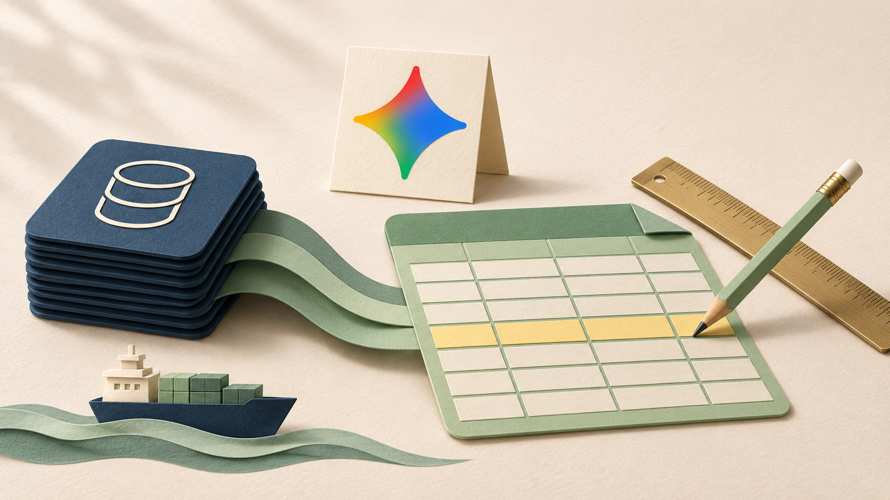
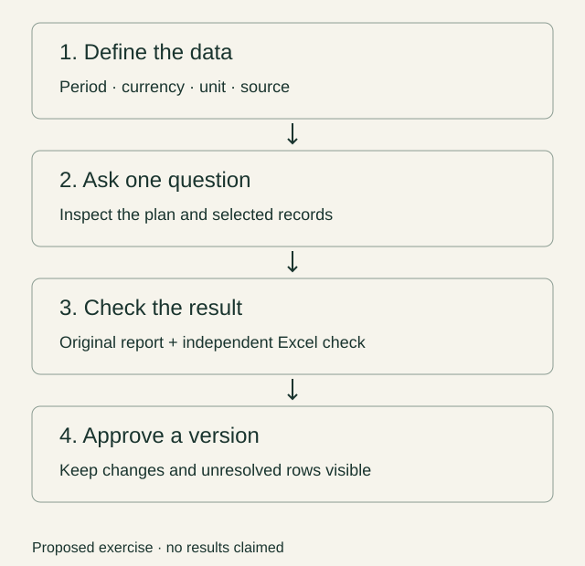

The question behind the query
My last note asked what would make me switch finance models. Looking at Google’s recent updates, I am more interested in what happens around the model: how the data reaches it, what question I ask, and whether I can reproduce the result.
On October 19, Google announced that Gemini in Connected Sheets can query the full connected BigQuery dataset and create refreshable analysis objects after presenting a plan for review. Its October 30 release of free finance-focused learning videos gives me another starting point. These are separate offerings; watching a course does not give me access to an enterprise product.
As a BBA finance student, I find the possibility of asking follow-up questions appealing. But “show me quarterly revenue” only becomes a useful instruction once I know what revenue, quarter and company mean in that dataset.
One shipping-data exercise I would try
I would start with one shipping company and a small table of figures checked against its official reports. Each row would retain the metric, reporting period, currency, unit, source URL, publication date and date checked. I would keep reported values separate from forecasts and record whether a figure covers one quarter or the year to date.
My first question would be deliberately narrow: “Using only reported quarterly revenue for this company, compare the same quarter across two years. Show the records used, their currencies and units. Identify missing or duplicate records. Do not infer missing values or combine currencies.” This is a prompt I would test, not a guarantee of what Gemini will return.
Before accepting the output, I would inspect the proposed analysis and its filters. Then I would reproduce the selected totals in Excel, check each underlying figure against the report, and calculate growth as current-period revenue divided by prior-period revenue, minus one. A zero or missing comparison value would remain unresolved. A correct growth calculation would still not explain whether freight rates, volumes or business mix caused it.
There is a practical catch. Connected Sheets requires suitable BigQuery access, permissions and a billing-enabled project or trial environment. The Gemini feature also requires an eligible plan; my own account access is unverified. For a few rows, a normal spreadsheet is probably the better starting point. I would consider the connected setup when recurring updates make maintaining the data worthwhile.
The skills I want to build
I want to learn enough SQL to inspect selection and aggregation, rather than treating natural language as a substitute for understanding the table. Google’s new finance courses cover areas including portfolio resilience, bond issuance and credit opportunities. I would use them to identify a useful exercise, then judge it by the corrections and review time it needs—not by how polished the first dashboard looks.
Later, I would explore n8n for collecting newly published reports into a staging area. That is my proposed workflow, not a tested Gemini integration. A refreshed table would enter a review queue before changing an approved model.
The next question is how to tell a new reporting period from a correction to an old figure. That is where a convenient query becomes a financial process I can maintain.
A workflow I would like to explore

Sources
- Analyze BigQuery data using natural language with Gemini in Google Sheets — Google Workspace Updates · Published 2026-10-19; accessed 2026-11-05
- New Gemini courses for financial services and legal teams — Google Cloud · Published 2026-10-30; accessed 2026-11-05
- Get started with BigQuery data in Google Sheets — Google Docs Editors Help · Published Undated documentation; accessed 2026-11-05
- What would make me switch my finance model? — Jaehyuk Song · Published 2026-10-29; accessed 2026-11-05